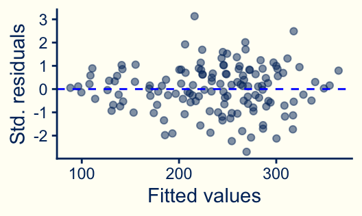
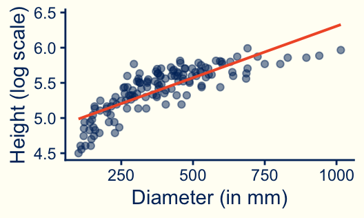
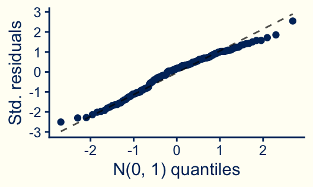
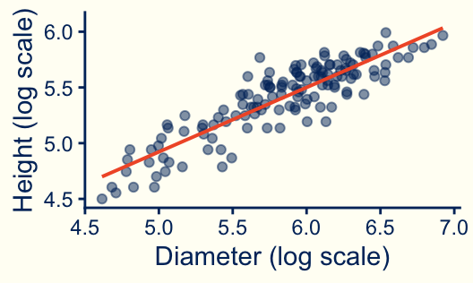
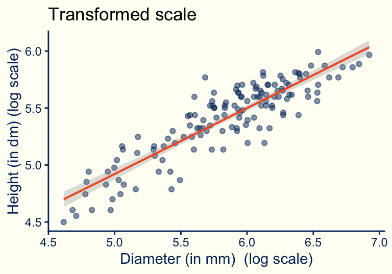

Registered S3 method overwritten by 'mosaic':
method from
fortify.SpatialPolygonsDataFrame ggplot2| mean |
|---|
| 2.146 |
Stat 230: Applied Regression Analysis
If a set of data values is skewed to the right, taking the (natural) log of each data value can result in a data set that is roughly symmetric and often roughly normal.

How are tree height and tree diameter related for the western red cedar?
Warning: Using the `size` aesthetic with geom_line was deprecated in ggplot2 3.4.0.
ℹ Please use the `linewidth` aesthetic instead.
linearity
constant errors
independent errors
normal errors
outliers
none








Warning: Using the `size` aesthetic with geom_ribbon was deprecated in ggplot2 3.4.0.
ℹ Please use the `linewidth` aesthetic instead.

Introduced by John Tukey and Frederick Mosteller for “straightening” data to better meet the assumption of linearity